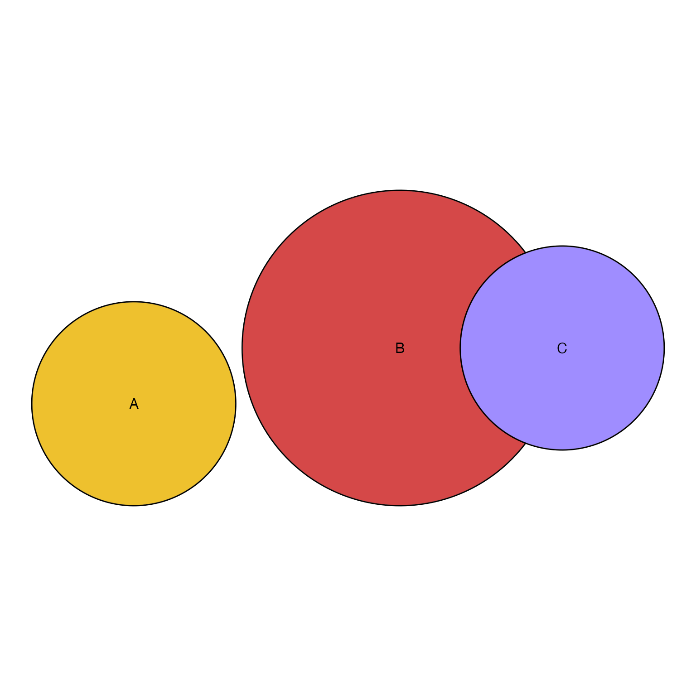
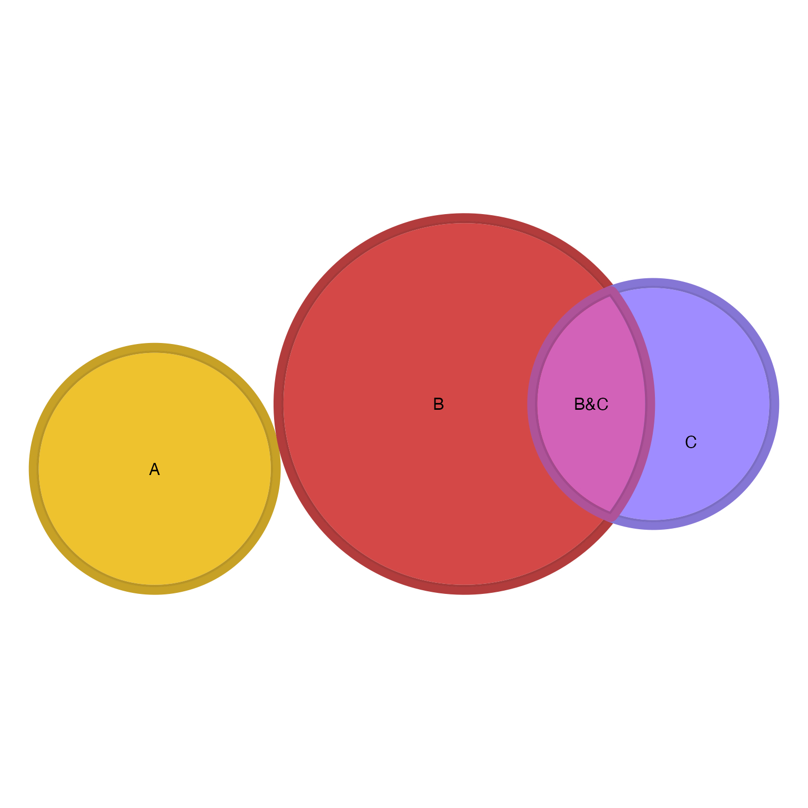
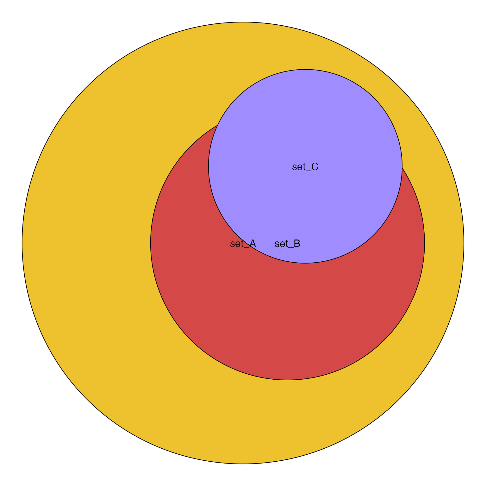
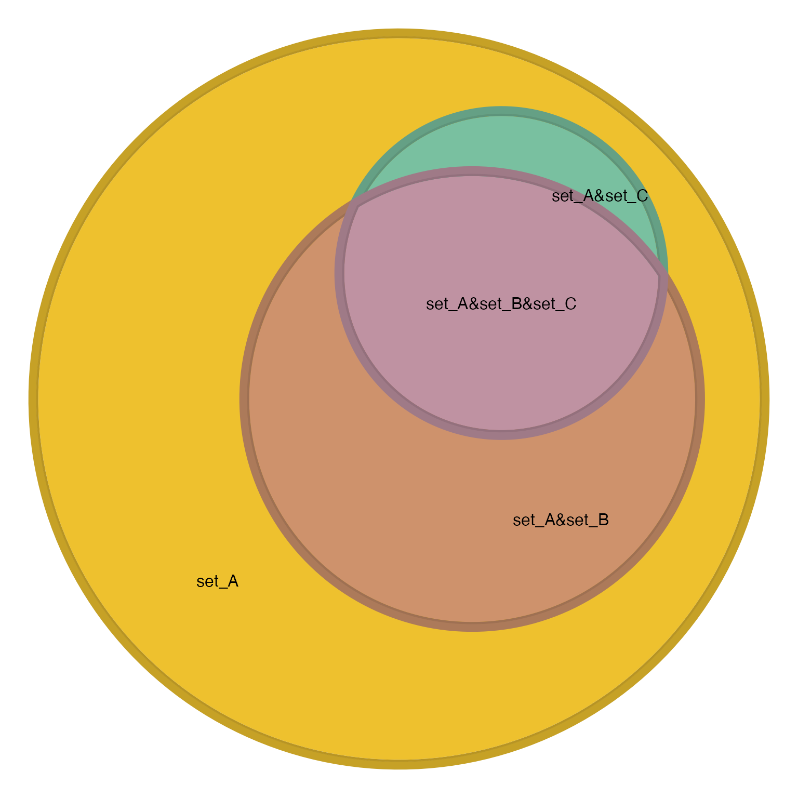

Find Venn polygon overlaps
Usage
find_venn_overlaps_JamPolygon(
jp,
venn_counts = NULL,
venn_items = NULL,
venn_colors = NULL,
sep = "&",
preset = "dichromat2",
blend_preset = "ryb",
do_plot = FALSE,
verbose = FALSE,
...
)Arguments
- jp
JamPolygonthat contains one polygon per set, named using set names.- venn_counts
vectorwithintegervalues, whose names represent each Venn overlap set combination, usingsepas delimiter between set names.- venn_items
listorNULLthat contains items in each overlap set.- sep
characterstring used as a delimiter between set names.- preset, blend_preset
characterstring passed tocolorjam::rainbowJam()andcolorjam::blend_colors(), respectively, to define the color hue wheel used for categorical colors, and for color blending. The defaultpreset="dichromat2"chooses color-blindness-friendly categorical colors, andblend_preset="ryb"blends multiple colors using a red-yellow-blue color wheel, consistent with paint-type color combinations.- do_plot
logicalindicating whether to plot the outputSpatialPolygonsDataFrameobject.- verbose
logicalindicating whether to print verbose output.- ...
additional arguments are passed to supporting functions
colorjam::group2colors(),colorjam::blend_colors(),nudge_sp().
Value
JamPolygon object, which contains columns:
"name""x","y""fill""venn_name""venn_count""venn_items""venn_color""label""label_x""label_y"
Details
This function takes a named list of polygons and returns the combination of polygon overlaps as used in a Venn diagram.
When a vector of Venn counts is supplied, the
counts are associated with the respective polygon,
and any counts not represented by a polygon
are returned as an attribute "venn_missing".
See also
Other JamPolygon:
JamPolygon-class,
Venndir-class,
[,JamPolygon,ANY,ANY,ANY-method,
add_orientation_JamPolygon(),
area_JamPolygon(),
bbox_JamPolygon(),
buffer_JamPolygon(),
check_JamPolygon(),
check_Venndir(),
eulerr_to_JamPolygon(),
farthest_point_JamPolygon(),
has_point_in_JamPolygon(),
intersect_JamPolygon(),
label_fill_JamPolygon(),
label_outside_JamPolygon(),
label_segment_JamPolygon(),
labelr_JamPolygon(),
minus_JamPolygon(),
nearest_point_JamPolygon(),
nudge_JamPolygon(),
plot.JamPolygon(),
point_in_JamPolygon(),
polyclip_to_JamPolygon(),
polygon_circles(),
polygon_ellipses(),
sample_JamPolygon(),
split_JamPolygon(),
union_JamPolygon(),
update_JamPolygon()
Examples
# simple Venn circles
test_counts <- c(A=5, B=10, C=3, `B&C`=2)
x <- eulerr::euler(test_counts)
jp1 <- eulerr_to_JamPolygon(x)
polygon_colors <- colorjam::rainbowJam(length(jp1))
jp1@polygons$fill <- polygon_colors;
plot(jp1)

xo <- find_venn_overlaps_JamPolygon(jp=jp1, venn_counts=test_counts)
xo@polygons$outerborder <- jamba::makeColorDarker(darkFactor=1.2,
xo@polygons$venn_color)
xo@polygons$outerborder.lwd <- 4;
plot(xo);

testlist <- list(set_A=LETTERS, set_B=LETTERS[1:10], set_C=LETTERS[7:11])
so <- subset(signed_overlaps(testlist), count > 0)
test_counts <- setNames(so$count, so$sets)
x <- eulerr::euler(test_counts)
jp1 <- eulerr_to_JamPolygon(x)
jp1@polygons$fill <- polygon_colors;
plot(jp1)

xo <- find_venn_overlaps_JamPolygon(jp=jp1, venn_counts=test_counts, verbose=TRUE)
#> ## (20:59:34) 09Dec2024: find_venn_overlaps_JamPolygon(): names(jp):set_A,set_B,set_C
#> ## (20:59:34) 09Dec2024: find_venn_overlaps_JamPolygon(): head(el1):
#> set_A set_B set_C
#> set_A 1 0 0
#> set_B 0 1 0
#> set_C 0 0 1
#> set_A&set_B 1 1 0
#> set_A&set_C 1 0 1
#> set_B&set_C 0 1 1
#> set_A&set_B&set_C 1 1 1
#> ## (20:59:34) 09Dec2024: find_venn_overlaps_JamPolygon(): set_A
#> ## (20:59:34) 09Dec2024: find_venn_overlaps_JamPolygon(): whichYes:1
#> ## (20:59:34) 09Dec2024: find_venn_overlaps_JamPolygon(): whichNo:2,3
#> ## (20:59:34) 09Dec2024: find_venn_overlaps_JamPolygon(): intersect_JamPolygon(jp[whichYes, ]), whichYes: 1
#> ## (20:59:34) 09Dec2024: find_venn_overlaps_JamPolygon(): minus_JamPolygon(jp[whichNo, ]), whichNo: 2,3
#> ## (20:59:34) 09Dec2024: find_venn_overlaps_JamPolygon(): length(overlap polygon):2
#> ## (20:59:34) 09Dec2024: find_venn_overlaps_JamPolygon(): set_B
#> ## (20:59:34) 09Dec2024: find_venn_overlaps_JamPolygon(): whichYes:2
#> ## (20:59:34) 09Dec2024: find_venn_overlaps_JamPolygon(): whichNo:1,3
#> ## (20:59:34) 09Dec2024: find_venn_overlaps_JamPolygon(): intersect_JamPolygon(jp[whichYes, ]), whichYes: 2
#> ## (20:59:34) 09Dec2024: find_venn_overlaps_JamPolygon(): minus_JamPolygon(jp[whichNo, ]), whichNo: 1,3
#> ## (20:59:34) 09Dec2024: find_venn_overlaps_JamPolygon(): length(overlap polygon):0
#> ## (20:59:34) 09Dec2024: find_venn_overlaps_JamPolygon(): set_C
#> ## (20:59:34) 09Dec2024: find_venn_overlaps_JamPolygon(): whichYes:3
#> ## (20:59:34) 09Dec2024: find_venn_overlaps_JamPolygon(): whichNo:1,2
#> ## (20:59:34) 09Dec2024: find_venn_overlaps_JamPolygon(): intersect_JamPolygon(jp[whichYes, ]), whichYes: 3
#> ## (20:59:34) 09Dec2024: find_venn_overlaps_JamPolygon(): minus_JamPolygon(jp[whichNo, ]), whichNo: 1,2
#> ## (20:59:34) 09Dec2024: find_venn_overlaps_JamPolygon(): length(overlap polygon):0
#> ## (20:59:34) 09Dec2024: find_venn_overlaps_JamPolygon(): set_A&set_B
#> ## (20:59:34) 09Dec2024: find_venn_overlaps_JamPolygon(): whichYes:1,2
#> ## (20:59:34) 09Dec2024: find_venn_overlaps_JamPolygon(): whichNo:3
#> ## (20:59:34) 09Dec2024: find_venn_overlaps_JamPolygon(): intersect_JamPolygon(jp[whichYes, ]), whichYes: 1,2
#> ## (20:59:34) 09Dec2024: find_venn_overlaps_JamPolygon(): minus_JamPolygon(jp[whichNo, ]), whichNo: 3
#> ## (20:59:34) 09Dec2024: find_venn_overlaps_JamPolygon(): length(overlap polygon):1
#> ## (20:59:34) 09Dec2024: find_venn_overlaps_JamPolygon(): set_A&set_C
#> ## (20:59:34) 09Dec2024: find_venn_overlaps_JamPolygon(): whichYes:1,3
#> ## (20:59:34) 09Dec2024: find_venn_overlaps_JamPolygon(): whichNo:2
#> ## (20:59:34) 09Dec2024: find_venn_overlaps_JamPolygon(): intersect_JamPolygon(jp[whichYes, ]), whichYes: 1,3
#> ## (20:59:34) 09Dec2024: find_venn_overlaps_JamPolygon(): minus_JamPolygon(jp[whichNo, ]), whichNo: 2
#> ## (20:59:34) 09Dec2024: find_venn_overlaps_JamPolygon(): length(overlap polygon):1
#> ## (20:59:34) 09Dec2024: find_venn_overlaps_JamPolygon(): set_B&set_C
#> ## (20:59:34) 09Dec2024: find_venn_overlaps_JamPolygon(): whichYes:2,3
#> ## (20:59:34) 09Dec2024: find_venn_overlaps_JamPolygon(): whichNo:1
#> ## (20:59:34) 09Dec2024: find_venn_overlaps_JamPolygon(): intersect_JamPolygon(jp[whichYes, ]), whichYes: 2,3
#> ## (20:59:34) 09Dec2024: find_venn_overlaps_JamPolygon(): minus_JamPolygon(jp[whichNo, ]), whichNo: 1
#> ## (20:59:34) 09Dec2024: find_venn_overlaps_JamPolygon(): length(overlap polygon):0
#> ## (20:59:34) 09Dec2024: find_venn_overlaps_JamPolygon(): set_A&set_B&set_C
#> ## (20:59:34) 09Dec2024: find_venn_overlaps_JamPolygon(): whichYes:1,2,3
#> ## (20:59:34) 09Dec2024: find_venn_overlaps_JamPolygon(): whichNo:
#> ## (20:59:34) 09Dec2024: find_venn_overlaps_JamPolygon(): intersect_JamPolygon(jp[whichYes, ]), whichYes: 1,2,3
#> ## (20:59:34) 09Dec2024: find_venn_overlaps_JamPolygon(): length(overlap polygon):1
#> ## (20:59:34) 09Dec2024: find_vennpoly_overlaps(): vennUse:1,4,5,7, vennMissing:2,3,6
xo@polygons$outerborder <- jamba::makeColorDarker(darkFactor=1.2,
xo@polygons$venn_color)
xo@polygons$outerborder.lwd <- 4;
plot(xo);
